Практичні курси · журнал «ДентАрт» 2019 №1
Спеціальні ефекти в реставрації зубів. Частина II
SPECIAL EFFECTS IN THE RESTORATION OF TEETH. PART II
Ольга Пономаренко,клініка-студія «Аполлонія» (м. Полтава, Україна)
Через вплив зовнішніх факторів або індивідуальних причин зуби набувають візуальних і структурних змін, які помітні оточуючим. Розуміння взаємозв’язку оптичних властивостей зубних тканин з параметрами колірної конструкції реставрації веде за собою основні правила вибору кольору реставрації з чітким прогнозуванням. У статті розглянуто кілька клінічних прикладів з варіантами пошарового нанесення композитних матеріалів, з комбінацією застосування композитних барвників як допоміжних елементів для створення індивідуальності реставрації при характеризації фісур бічних зубів, а також порушено світлу тему реставрації відбілених зубів як модного тренду в косметичній стоматології.
«Простота, правда і природність – ось три великих принципи прекрасного у всіх творах мистецтва».Крістоф Віллібальд Глюк
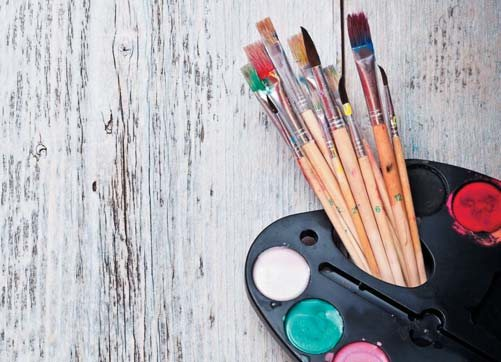
У першій частині статті ми докладно розглянули тему характеризації композитних реставрацій для імітації таких індивідуальних особливостей, як ефект білих плям при флюорозі або гіпоплазії емалі, можливості використання профарбовування реставрації для створення ілюзії природних зубів з чітким ефектом гало, а також імітації невеликих дефектів і морфологічних змін, які вплинули на структуру зубних тканин через старіння та функціональне зношування. Завдання стоматолога полягає в пошуку гармонії між функціональними вимогами та індивідуальною естетикою кожного пацієнта.
Дуже часто зустрічаються ситуації, коли стандартними протоколами підбору кольору композиту неможливо здійснити повну інтеграцію реставрації, зробленої стоматологом, у загальноклінічну картину. Для гармонійного поєднання реставрації з оточуючими структурами можна застосувати фарбування ефект-фарбами основних фісур на жувальній поверхні, при цьому потрібно враховувати фізіологічні та індивідуальні особливості стану сусідніх з планованою реставрацією зубів.
Ефект характеризації фісур
До композитних реставрацій бічних зубів передусім ставляться функціональні вимоги, і одним із факторів, що впливають на бездоганну функціональність конструкцій, є коректне моделювання оклюзійної поверхні зі створенням анатомічних елементів будови оклюзійної поверхні. На жувальній поверхні бічних зубів розташовуються фісури першого, другого і третього порядку. Кожна група виконує певну функцію при оклюзійних рухах нижніх зубів щодо верхніх. Фісури першого порядку (найглибші на оклюзійній поверхні) визначають функцію основних напрямних рухів по ікловому і різцевому шляхах. Фісури другого порядку розбивають за своєю структурою побудови кожен горбик на три частини (мезіальна, центральна, дистальна), формуючи при цьому яскраво виражену морфологію оклюзійної поверхні. Фісури третього порядку (поверхневі) визначають функцію дренажної системи коронкової поверхні.2 Існують не лише базові морфологічні характеристики будови фісур, а й окремі індивідуальні варіації, адаптовані до вельми мінливих умов функціонального зношування.
Зміна кольору емалі в глибині основної фісури першого порядку природного зуба зумовлена тим, що в цій зоні емаль дозріває значно пізніше, ніж емаль горбиків і ріжучих країв, тут також відбувається інтенсивна взаємодія тканин з кислотами і харчовими барвниками, а також відкладення меланіну, що призводить до стійкого ефекту пігментації.
При індивідуальній характеризації фісур у бічних зубах використовуються барвники світло- або темно-коричневого кольору текучої консистенції. Ці оклюзійні колірні характеристики можуть відрізнятися за відтінком та інтенсивністю, в залежності від загальної клінічної картини стану інших зубів у ротовій порожнині пацієнта.
Пігментний текучий композит наноситься для демонстрації деталей морфології та функціональних особливостей анатомії, включаючи центральну фісуру, основні і додаткові борозни і гребені.
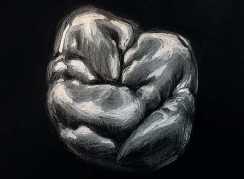
За типом характеризації та послідовності внесення ефект-фарби виділяють два способи:
- Поверхнева характеризація фісур – коли забарвлювання провадиться по зовнішньому шару реставрації. Невелику кількість барвника гострим інструментом наносять на рівні дна міжгорбикової фісури після остаточного її контурування. Перед полімеризацією надлишок барвника видаляють мікробрашем і закривають ейр-блоком. З цією роллю чудово впорається гліцерин – він потрібний для уникнення утворення в реставрації поверхневого шару, інгібованого киснем, особливо в глибині фісури.
- Внутрішня характеризація провадиться в процесі моделювання, барвник вноситься між шарами. Як характеризуючі ефект-відтінки використовуються композитні фарби, які широко представлені на ринку: Inspiro Effect Shade Fissure, Enamel Plus Stain Brown, Brown 2 (Micerium) або Kolor+Plus Brown (Kerr).
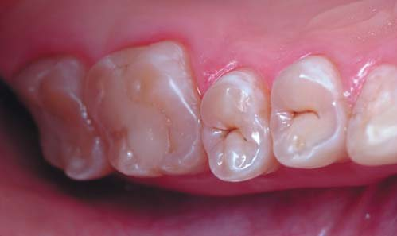
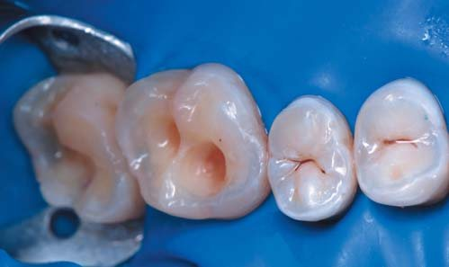
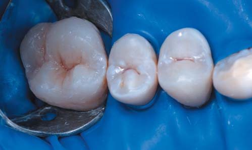
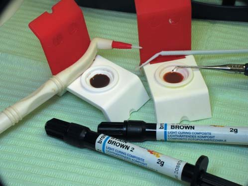
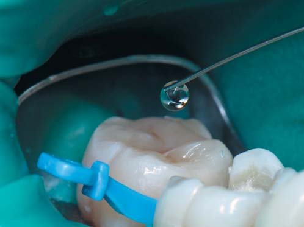
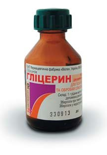
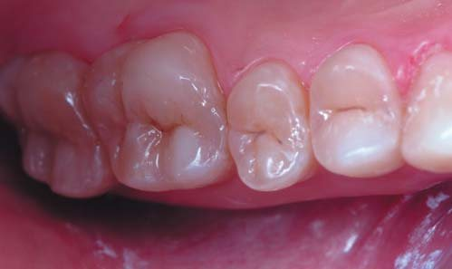
Клінічний приклад 1
Пацієнт звернувся в клініку з метою планової санації для заміни старих пломб у бічних ділянках верхньої щелепи; було поставлене основне завдання – відновити жувальну ефективність. Цей клінічний приклад продемонструє, як можна відновити бічну ділянку композитними реставраціями малоінвазивним, швидким і простим способом, з повною естетичною інтеграцією і застосуванням характеризації фісур.
Початкова ситуація
Зуби 28 і 27 ліковані з приводу карієсу понад 5 років тому, в зубі 26 чітко видно розгерметизацію реставрації, що проявляється у вигляді пігментації в зоні крайового прилягання. Попередня рентгенодіагностика виявила приховані проблеми: зуб раніше ендодонтично лікували, і герметизм системи кореневих каналів на момент звернення був під питанням. Архітектура жувальних поверхонь зубів порушена, відтак порушена і функціональність цих зубів.
Препарування
Після препарування та видалення старих пломб і каріозних уражень зроблено реєстрацію оклюзійних контактів артикуляційною фольгою товщиною 20 мкм. І якщо при виборі методу відновлення зубів 28 і 27 не було сумнівів у прямій техніці, такі реставрації передбачувані і довговічні, то для реставрації девітального зуба 26 було запропоновано кілька варіантів вирішення: пряма реставрація, вкладка або коронка. Зваживши всі ризики і можливі ускладнення, вибрали метод прямої реставрації з армуванням індивідуальною скловолоконною вкладкою.
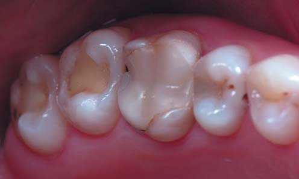
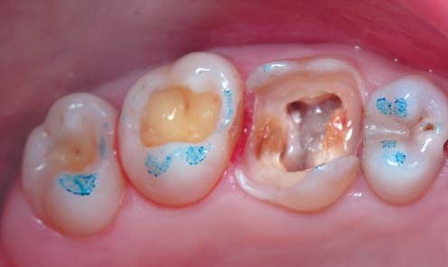
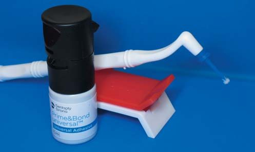
Вибір адгезивної системи
У довговічності функціонування будь-якої реставрації провідну роль відіграє адгезивне з’єднання, у цьому випадку як адгезив була застосована остання новинка на стоматологічному ринку: новий клас одноетапних універсальних адгезивів – система Prime&Bond universal™ з технологією Active-Guard™ (Dentsply Sirona). Таке розширене визначення стосується застосування як для прямих, так і непрямих реставрацій у поєднанні з матеріалами подвійного затвердіння або самозатвердження, в тому числі на кераміці з оксиду цирконію з додатковими праймерними властивостями. Термін «універсальний» охоплює розширені можливості застосування адгезиву у всіх техніках протравлювання: самопротравлювання, селективного і тотального. Склад адгезиву забезпечує м’яке протравлювання (рН>2,5), містить стійкий до гідролізу інноваційний зшивний агент, ефір фосфорної кислоти, ізопропанол і воду. Адгезив Prime&Bond universal™ (Dentsply Sirona) забезпечує високу надійність застосування навіть на пересушеному і вологому дентині, він стійкий до різного ступеня вологості і дозволяє активно контролювати кількість вологи на поверхні зуба, забезпечуючи відсутність післяопераційної чутливості.
Вибір матеріалу
Безумовно, на вибір матеріалу для реставрації жувального зуба впливає велика кількість чинників. Це передусім міцність композиту, зручність роботи з ним, його зносостійкість та естетичність, модельованість, передбачуваність результату.
Головна клінічна проблема у подібних ситуаціях – виникнення полімеризаційної усадки і напруги в композиті. Використання матеріалу SDR (Dentsply Sirona) як замінника дентину зменшить полімеризаційну напругу в конструкції реставрованого зуба. Як основний матеріал для одношарової реставрації був обраний нанокерамічний композит Сeram.Х SphereTEC Оne відтінку А2 (Dentsply Sirona). Його унікальність полягає в новій технології наповнювача, який становить собою поєднання сферичних частинок та оптимізованої матриці смоли, що забезпечує властивості кращої модельованості матеріалу і прискорює час реставрації. Привабливими властивостями цього нового матеріалу є полегшений підбір відтінків, простота адаптації в порожнині, гарна скульптурність композиту, а також час фінішної обробки до досягнення блиску поверхні.
Етапи реставрації зубів 28, 27
При реставрації зубів 28, 27 була застосована техніка селективного протравлювання, оскільки є ризик виникнення післяопераційної чутливості в таких порожнинах класу I за Блеком, що мають високий показник С-фактора. Після 20-секундної експозиції тільки на емалі 36% ортофосфорної кислоти кислотний агент видаляється великим об’ємом води, тканини висушуються і настає етап внесення адгезивної системи Prime&Bond universal™ (Dentsply Sirona) на 30 секунд, у відповідності з інструкцією виробника дентин підготовано в техніці самопротравлювання. Полімеризація адгезивної плівки провадиться після видалення розчинника, після чого поетапно вносяться порції композиту Сeram.Х SphereTEC Оne (Dentsply Sirona) в межах кожного окремого горбика.
Після відновлення оклюзійної зони молярів на дно сформованої основної фісури вноситься невелика кількість текучого композиту SDR (Dentsply Sirona), надлишки якого видаляються мікробрашем. На незаполімеризований мікрошар текучого композиту в глибину фісури тонким інструментом вноситься ефект-фарба, яку слід розподілити, не виводячи за периметр оклюзійної зони. Наявність на дні фісури текучого композиту дозволяє контролювати кількість введеного барвника і за необхідності прибрати його надлишки. Характеризація має натуральний вигляд, якщо фарби не дуже багато. Перед фінішною полімеризацією вноситься ейр-блок-гліцерин.
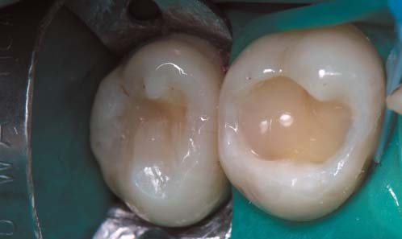
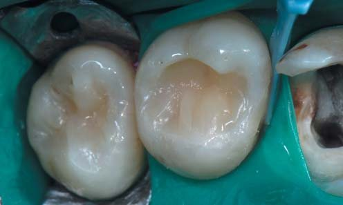
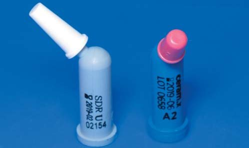
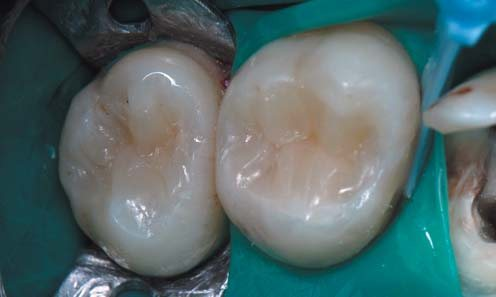
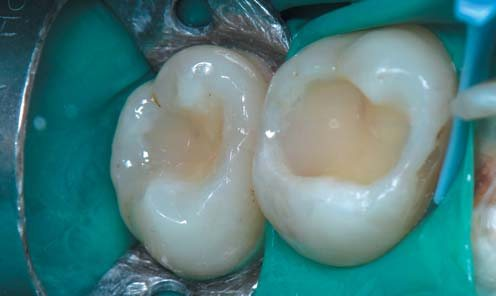
Етапи реставрації зуба 26
Після ендодонтичного втручання з метою відновлення герметизму системи кореневих каналів проведено тотальне кислотне протравлювання дентину і емалі та адгезивну підготовку тканин системою Prime&Bond universal™ (Dentsply Sirona), устя кореневих каналів загерметизировані SDR (Dentsply Sirona). Потім в анатомічних параметрах були відновлені оральна і вестибулярна стінки коронки матеріалом Сeram.Х SphereTEC Оne (Dentsply Sirona), дно порожнини армовано стрічками скловолокна Dentapreg Splint плетеного типу, адаптованого на композитний посередник, для додаткового посилення конструкції скловолоконною вкладкою.
Після адаптації матриці, щільно притиснутої клином у цервікальній зоні до поверхні зуба, було встановлено сепараційне кільце. Завдяки анатомічним матрицям системи Palodent V3 (5,5 мм) (Dentsply Sirona) створено коректні контактні поверхні.
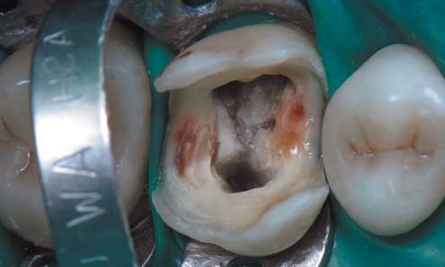
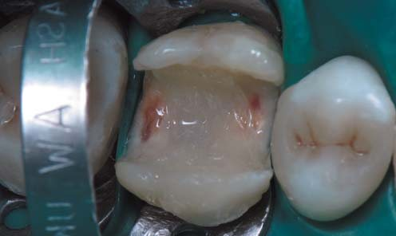
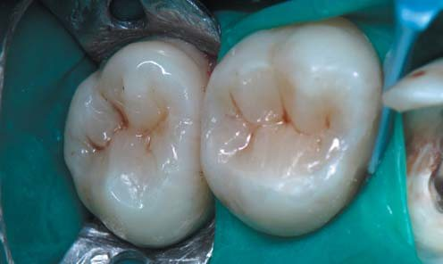
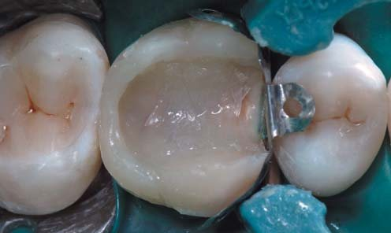
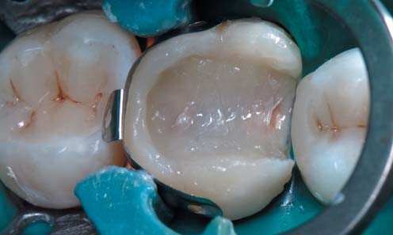
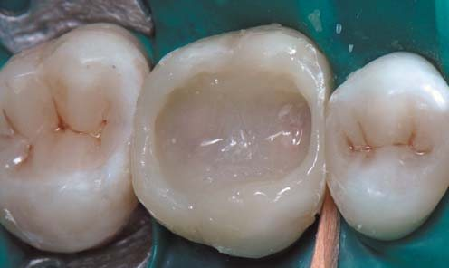
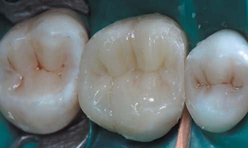
Після реставрації
Вигляд реставрації після відтворення анатомії оклюзійної поверхні матеріалом Сeram.Х SphereTEC Оne (Dentsply Sirona). Для індивідуалізації реставрації використаний барвник коричневого кольору, який також наносили тонким інструментом на попередньо адаптований у фісуру SDR (Dentsply Sirona).
Після закінчення реставрації проведені її оклюзійна інтеграція і полірування системою Enhance (Dentsply Sirona). Перевага цієї системи – швидкий і зручний протокол. Використана комбінація матеріалів Сeram.Х SphereTEC Оne і SDR (Dentsply Sirona) спрощує процес реставрації і дозволяє домогтися передбачуваного, естетичного і довговічного результату роботи, що забезпечує очікувану міцність, естетику і стійкість до стирання.
Однозначно, характеризація фісур при реставрації бічних зубів не є обов’язковою процедурою, вона не впливає на функціонування стоматологічного виробу, і пацієнти найчастіше проти таких «штучок». З другого боку, для повного задоволення від своєї роботи необхідним чинником для дизайнерів усмішок є відтворення найбільш наближеної до натуральних зубів картини, з об’ємним тривимірним сприйняттям оклюзійної поверхні. Якщо характеризація візуально відповідає профарбованим фісурам на натуральних зубах, то реставрація добре інтегрується естетично в зубному ряду в цілому і може стати невидимою у загальноклінічній картині.
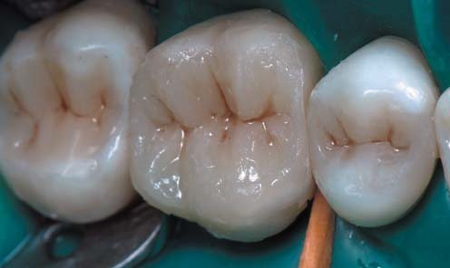
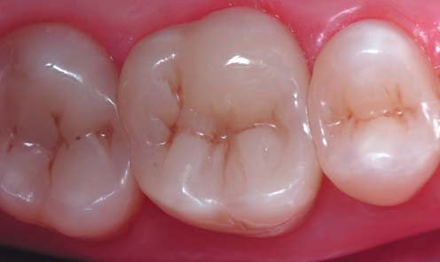
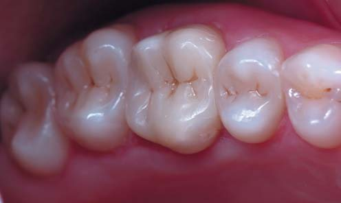
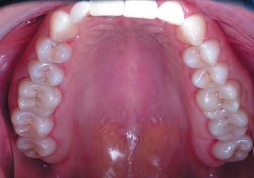
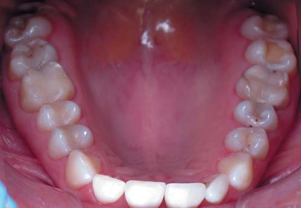
Інстаграм синдром. «Журнальні зуби» (С. Радлінський)
Тема наступного розділу статті виникла в результаті модної тенденції, що активно крокує в естетичній стоматології, – дуже затребуваної косметичної процедури відбілювання зубів та інших варіантів здобуття білосніжної усмішки у вигляді прямих і непрямих реставрацій за типом вінірів кольору «бліч». Слід сказати, що всі ці косметичні техніки мають мало спільного з головними цілями будь-якого стоматолога – відновити і зберегти стоматологічне здоров’я, і такі втручання не завжди проводять за медичними показаннями. Як зауважують психологи, білі зуби справді надають людині впевненість у собі, білосніжну усмішку сприймають як візитну картку успішної людини. Зміни в запитах наших пацієнтів відбуваються через підвищене соціальне значення усмішки, і якщо раніше в кабінет стоматолога пацієнта в першу чергу приводив симптом болю, то сьогодні пацієнти частіше вимагають від стоматологів не так лікування, як естетичних досягнень у відновленні зубів. І з орієнтацією на вимоги пацієнтів виникають усілякі методики і техніки, які стоматологи пропонують для задоволення бажання мати гарні білі зуби.
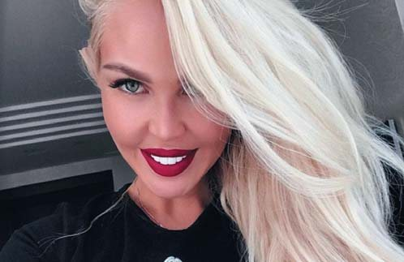
У стоматології є свої межі здорового вигляду і природності зубів. Пацієнти не знають багатьох нюансів, їм не відома колірна конструкція в топографії зубів та анатомічні норми, і їхні запити на реставрації у вигляді «подушечок Орбіт» чи кольору сантехнічного фаянсу для лікаря-реставратора можуть стати професійним провалом. Це так само неприродно, як і популярні в минулому золоті коронки, заради яких деякі пацієнти тоді готові були пожертвувати абсолютно здоровими зубами.
Жертвопринесення красі здійснюються щодня, таких пацієнтів ми можемо означити як пацієнти з «інстаграм синдромом», вони завжди знають, який з відтінків дуже білого їм потрібний. Щодня з екранів телевізорів і улюблених гаджетів, зі сторінок глянцевих журналів усміхаються успішні люди, і звичайно, ці приклади кличуть до наслідування.
Як розпізнати наявність «інстаграм синдрому» у вашого пацієнта? Спостерігаючи за такими пацієнтами, ми можемо виділити спільні позиції в поведінці:
- показують фотографії усмішок знаменитостей як приклад;
- готові жертвувати здоровими тканинами зубів;
- отримавши бажаний відтінок, цікавляться, чи можна зробити зуби ще світлішими;
- обізнані з усіма методами відбілювання;
- упевнені, що після набуття білосніжних зубів їхнє життя зміниться на краще.
Це дуже вимогливі пацієнти, їх дуже важко задовольнити відтінками зі стандартної шкали Vita. При виборі колірної конструкції реставрації вибілених зубів слід звернути увагу на такі орієнтири, як вік, колір шкіри, відтінок ясен, тип усмішки, відтінок реставраційної основи, тобто власних тканин. Усі ці параметри можуть вплинути на кінцевий результат. Для природності також можна орієнтуватися на білки очей, зуби не повинні бути набагато білішими. На ринку існує безліч матеріалів, здатних імітувати відтінки вибіленої емалі різної яскравості, але для створення натуральної оптичної анатомії важливо не позбавляти зубів прозорості. Для підтримання ефекту напівпрозорого ріжучого краю та візуалізації мамелонів при створенні бліч-реставрацій колірна конструкція повинна включати, крім відтінку основної вибіленої емалі високої яскравості, ще й шар прозорої емалі. Рецепт, який дозволить виконати реставрацію в прямій техніці зі спецефектом натуральних, але вибілених зубів, має враховувати контроль товщини і оптичної щільності матеріалу для рівномірного перекриття колишнього відтінку зуба.
Клінічний приклад 2
Пацієнтка 56 років звернулася зі скаргами на втрату естетики зубів, пов’язану з їх стиранням. В анамнезі зазначає регулярне відбілювання зубів у домашніх умовах. При визначенні кольору зубів визначається відтінок, світліший і яскравіший, ніж відтінок А1 за шкалою Vita. Побажання пацієнтки були залишити відтінок зубів у її відбілених натуральних параметрах. Після консультації пацієнтка надала перевагу техніці прямої реставрації.
Оскільки при такому типі стирання топографічні межі втрачених тканин зачіпають зони основного дентину, основної емалі і прозорої емалі, то колірна конструкція багатошарової реставрації складалася з таких відтінків: для імітації плащового дентину матеріалом вибору став Ceram X Dentin&Enamel, відтінок D3 (Dentsply Sirona), для основної емалі з ефектом відбілювання при примірюванні підійшов відтінок XL Esthet X HD (Dentsply Sirona), і поверхневу емаль взяли WE Esthet X HD (Dentsply Sirona), це біла прозора емаль.
Етапи реставрації зубів 12, 11, 21, 22
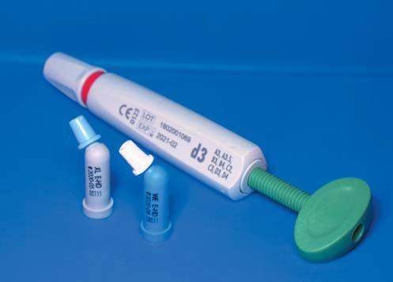
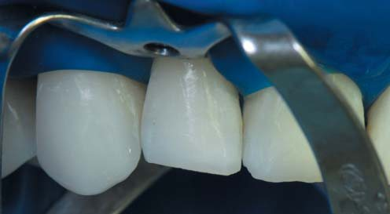
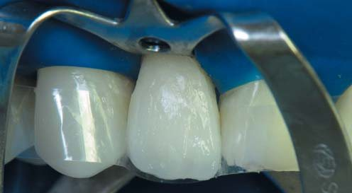
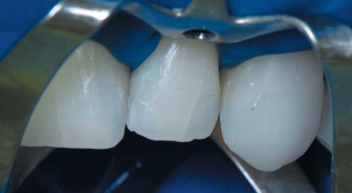
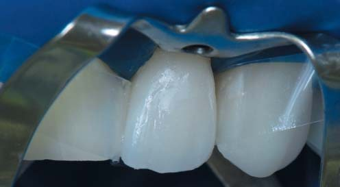
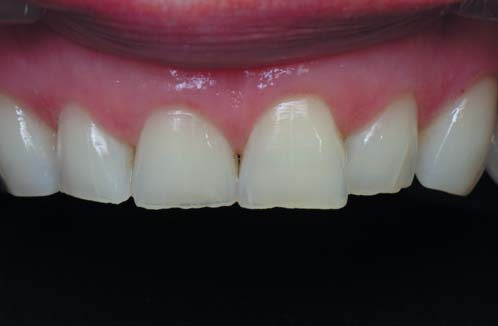
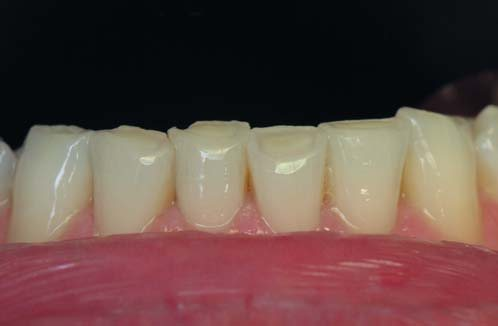
Фінальна фотореєстрація після полірування демонструє натуральний природний вигляд зубів з ефектом відбілювання. Таким щадним підходом ми змогли задовольнити естетичні вимоги пацієнтки без екстремальних перевтілень.
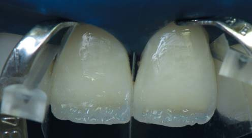
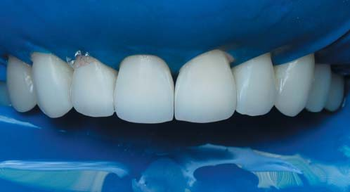
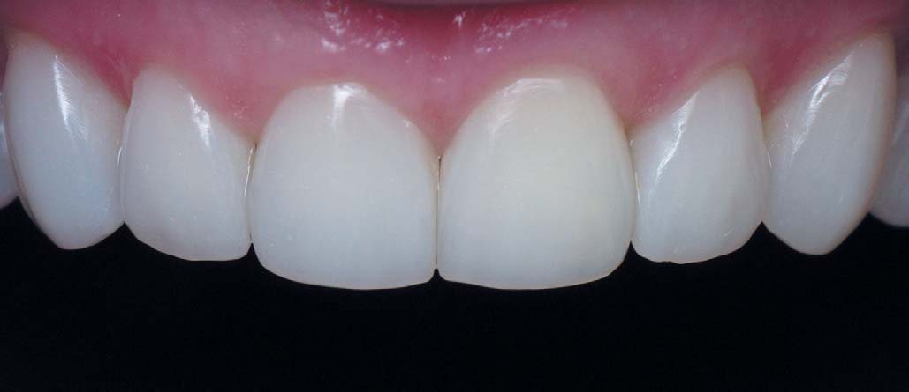
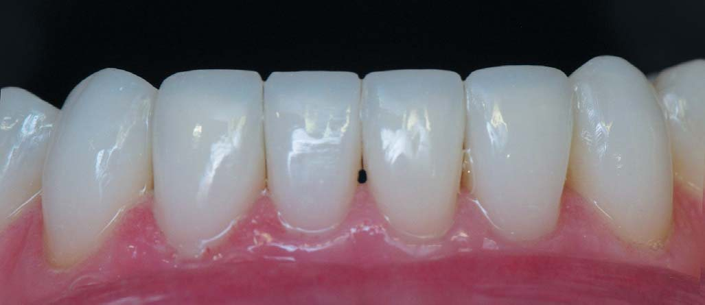
Клінічний приклад 3
Бувають ситуації, коли пацієнт не відразу відважується на кардинальні зміни, як у цьому випадку, коли пацієнтка звернулася в нашу клініку 8 років тому, і на той момент колега зробила реставрацію, орієнтуючись на її вимоги. Тоді було поставлене завдання вирішити естетичні проблеми без втручання в колір і висоту прикусу. Через 5 років життєві обставини та пріоритети пацієнтки змінилися, і вона повторно звернулася за реконструкцією лінії усмішки вже зі сформованим бажанням отримати «голлівудський» тип усмішки. Цей термін кожен може розуміти по-своєму, тому після тривалих консультацій було визначено основні загальні позиції в її понятті «голлівудського» типу: дуже білі й рівні зуби, при цьому пацієнтка активно демонструвала різні світлини усмішок знаменитостей.
За шкалою Vita зуби відповідали відтінку А3. Для колірної конструкції реставрації як замінник плащового дентину було обрано відтінок D3 Ceram X Dentin&Enamel (Dentsply Sirona), для перекриття досить темного відтінку реставраційної основи застосовано новий матеріал з гарними маскувальними можливостями Сeram.Х SphereTEC Оne (Dentsply Sirona) відтінку вибілених зубів BW, в назву матеріалу вкладено розшифрування відтінку – вибілений білий «Bleach White», з обов’язковим перекриттям його прозорим відтінком наногібридного реставраційного матеріалу WE Esthet X HD (Dentsply Sirona). Виняткові маніпуляційні властивості, простий підбір відтінків, швидке полірування, блиск і довговічність – це основні вимоги, яким відповідають обрані матеріали.
Етапи реставрації зубів 13, 12, 22, 23
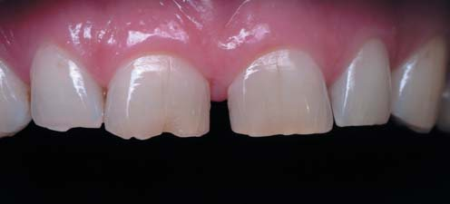
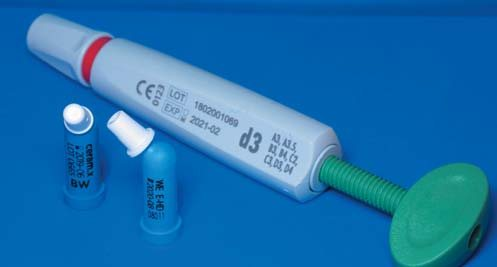
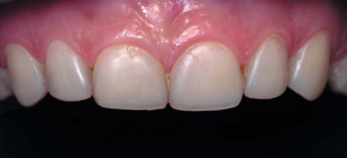
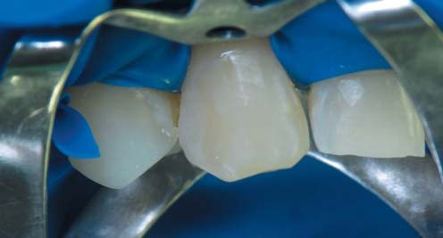
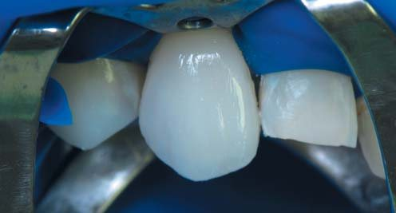
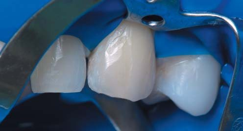
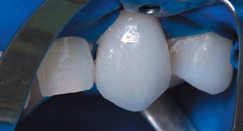
Перед відновленням центральних різців виконано композитний мок-ап і проведено фонетичні проби.
Етапи реставрації зубів 11, 21
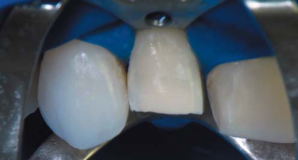
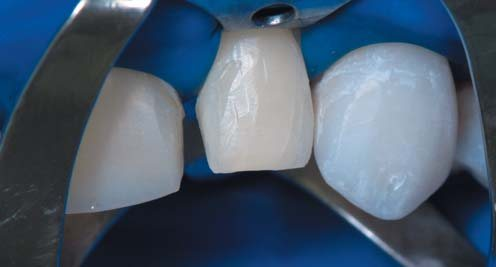
Фронтальний вигляд реставрованих зубів після полірування і загоєння ясен. Складне завдання з другої спроби не тільки повністю задовольнити, а й перевершити очікування пацієнтки з «інстаграм синдромом», виконане.
Сьогодні білосніжна усмішка позиціонується як основний і практично незмінний тренд «зубної моди», однак, незалежно від нових віянь і тенденцій, головний принцип залишається постійним – зуби повинні бути здоровими. І коли мода на все штучне, кричущо-помітне мине, що будуть робити наші пацієнти? Стоятимуть у черзі за новими відтінками...

Висновки
Підлаштовування прямої реставрації під нестандартні колірні рішення – непросте завдання. Сучасні стоматологічні матеріали, в тому числі й композитні, можуть з успіхом застосовуватися не лише в стандартних протоколах, але й при найскладніших індивідуальних запитах. У цій статті зроблено акцент на художньому аспекті планування реставрації, який можливий за наявності широкого спектру кольорів композиту і допоміжних компонентів. Сьогодні в арсеналі лікаря-стоматолога безліч технік, що дозволяють створити усмішку мрії. Є можливість робити це малоінвазивно, без великих затрат часу, зберігаючи здоров’я наших найвимогливіших пацієнтів.
Література
- Радлинский С. В. Реставрация контактных поверхностей боковых зубов // ДентАрт. – 2015. – №2.
- Ветчинкин А. В. Эстетические основы формообразования зубов // Маэстро стоматологии. – 2003. – №3 (12).
- Dentsply. Научный компендиум Prime&Bond universal.™
- Amaral M., Belli R., Cesar P. F., Valandro L. F., Petschelt A., Lohbauer U. The potential of novel primers and universal adhesives to bond to zirconia. J Dent 42 (1), 90-98 (2014).
- Dentsply. Научный компендиум Сeram.Х SphereTEC Оne, 2015.
- Dentsply. Научный компендиум Сeram.Х SphereTEC Оne, 2015.